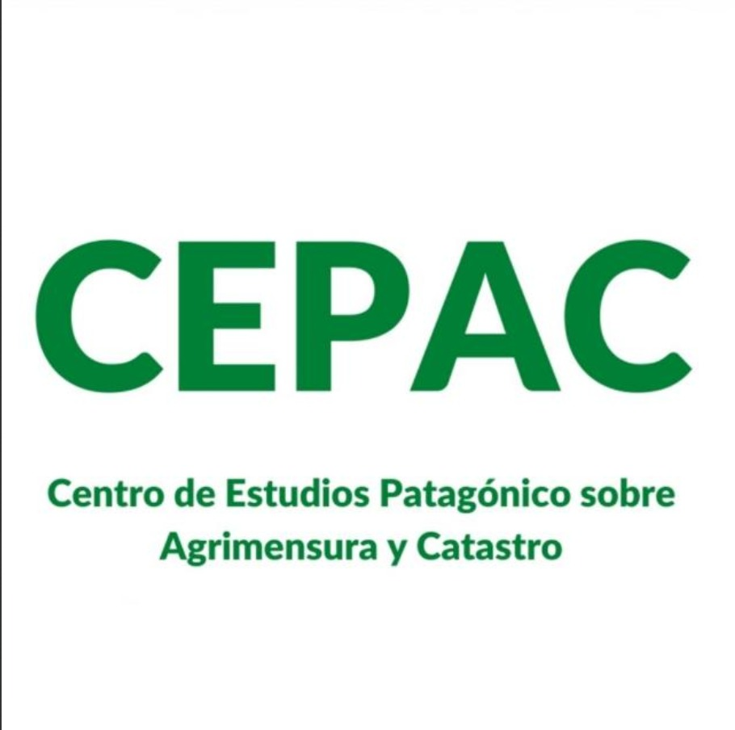

Novedades
14 de noviembre de 2025
El CEPAC partició del I Congreso Provincial de Agrimensura y Catastro celebrado en Cipoletti y organizado en conjunto entre la Dirección de Catastro y el Consejo de Agrimensura, ambos de la Provincia de Rio Negro .
